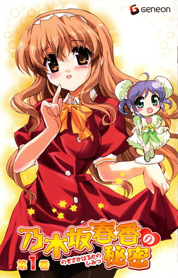
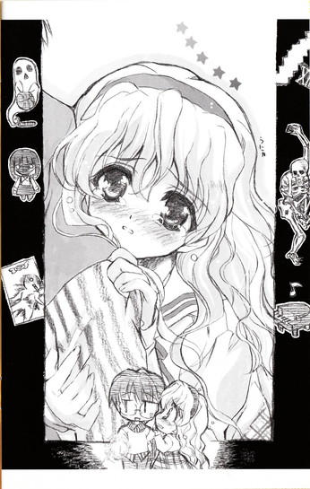
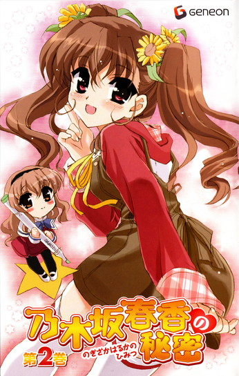
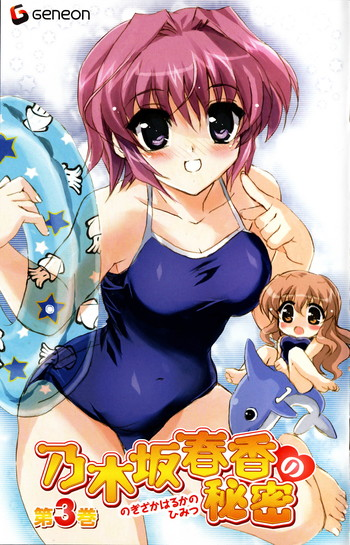
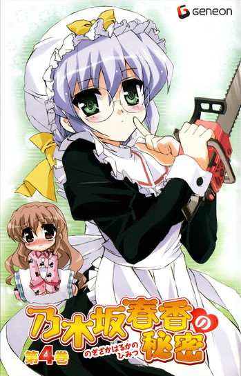
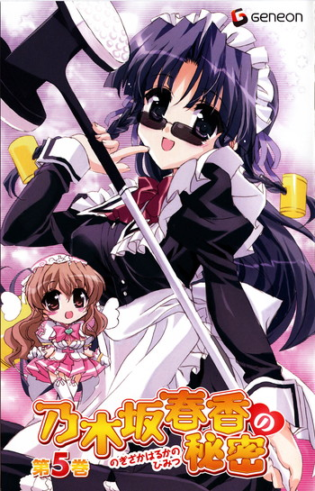
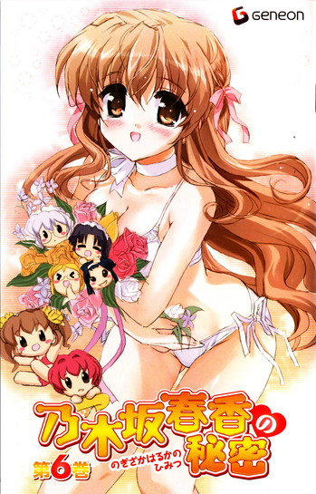
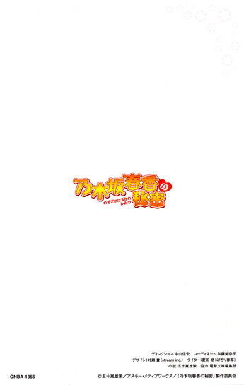

| [五十嵐雄策] 乃木坂春香の秘密初回限定版特典ＳＳ | |
| 五十嵐雄策 | |
| (2015) | |
|
ＤＶＤ「乃木坂春香の秘密」初回限定版特典ＳＳ
五十嵐雄策
|

はるかのひみつ（はあと）
０
──それは、私にとって小さな冒険でした。
他の人にとっては取るに足らない些細なことかもしれないけれど、私にとっては冒険と呼べるほどの出来事......
夜に一人でお屋敷を抜け出して、真っ暗になった街を駆け抜ける。
知り合ったばかりの男の人のお家にお電話をして、だれもいない学園に入って図書室でこっそりと本の返却作業をする。
この十六年間生きてきて、あんな体験は初めてでした。
一度にあんな色々な感情を自覚する経験をしたのは......本当に初めてでした。
「......」
真っ暗になった部屋で、ベッドから天蓋を見上げながら思い返します。
つい何時間か前の出来事。
その時のことを頭に思い浮かべると......不謹慎かもしれませんが、今でも少しだけわくわくしてきてしまいます。
それは一人でなかったからかもしれません。
思いも寄らなかった事態に混乱する私といっしょに、図書室にまで行ってくれた人。
私の秘密を知ってもそれまで変わらずに接してくれて、そして名前で呼んでもらうことを約束して、名前で呼ぶことを約束した男の人......
あの方がいてくれたからこそ、今こんな風に心穏やかにいられるわけで......
──どくん。
「............」
どうしてしまったのでしょう。
何だかあの人のことを思い出すと今でも胸がどきどきしてしまいます。まるで心臓が自分から切り離されて勝手に動いているみたいというか......今までこんなことはなかったのに......
「......」
何とか胸の動きを抑えようとします。
でも全然収まりません。
それどころかむしろ段々と高嗚りは大きくなっていくようで......
ほ、本当にどうしてしまったのでしょう......？
考えれば考えるほど胸の奥が熱くなってきて、目が冴えてきてしまいます。
自分でもどうしようもない感じで......
だけど早く寝ないと、明日の学校に障ってしまいます。
ただでさえ少しだけ寝る時間が遅くなってしまったので、これ以上夜更かしをするわけにはいかないです。
「......」
何とか眠りに就こうと、枕元にあったテディベアのキンググリズリーくんを抱きしめたのでした。
１
「......春香様、起きてくださいませ」
「う......ん......」
カーテンの向こうから射してくる柔らかな光と、耳元に響く同じくらいに柔らかく温かな声でゆっくりと意識が覚醒していくのを感じました。
「......そろそろ起床いたしませんと学園に遅れてしまいます。朝食の支度もすでに整っておりますので......」
「あ......はい......です......」
まだ少し眠たい目をこすりながら身体を起こすと、そこにはいつも通りの優しげな面持ちで葉月さんがいらっしゃいました。
「おはようございます......葉月さん」
「......はい、おはようございます春香様」
深々と頭を下げて挨拶をしてきてくれます。
葉月さんはおうちでメイド長さんをやってくださっている方です。
私が子供の頃からお屋敷でいっしょに暮らしていて、ずっと傍で色々とお世話をしてくださっていました。私にとってはほとんど家族のような大事な人の一人です。
「......春香様、大丈夫でしょうか？」
「え？」
と、葉月さんがそう尋ねてきました。
「......今朝は珍しくずいぷんと眠そうに見えますが。何かあったのでしょうか？」
「あ、はい。昨晩はちょっと──あっ」
言いかけて慌てて言葉を止めます。
昨夜の冒険のことは葉月さんにも内緒なのです。そもそも夜八時以降の一人での外出は禁止ですし、黙って出かけてしまったことが知られてしまっては余計な心配をかけてしまいます。
それに......何だか、昨日あったことは他の方には秘密にしておきたい感じなのです......
「......？ どうかされましたか？」
「い、いえ、何でもないです。だ、だいじょうぶですから」
不思議そうな顔をされる葉月さんに、慌てて首を振って答えます。
葉月さんは少しの間目をぱちぱちとされていましたが、
「......そうですか。ならよろしいのですが」
「は、はい」
すぐにそううなずいてくださいました。
よ、よかったです。うまくお話を逸らすことができたみたいです......
「......ですが昨晩は無事にミッションを成功させられたご様子で何よりです。良き出会いもされたようで、私としても喜ばしく思っております」
「え？ 何か言いましたか、葉月さん？」
「......いえ、何でも」
「？」
「......それよりもご準備ができましたら『大朱雀の間』へどうぞ。朝食ができております」
「あ、はい。そうですね」
うなずき返して、
葉月さんといっしょにダイニングヘと向かったのでした。
２
「あ、お姉ちゃん、おっはよ～♪」
ダイニングには、すでに美夏が来ていました。
イスに座ってホットミルクを飲みながら、こちらに向かって楽しそうにぶんぶんと手を振ってきます。
「今日はいつもよりちょっと遅かったね～。どうかしたの？」
「あ、えと、ちょっと昨晩は寝付きが悪くて......」
「ふ～ん、そっか～。お姉ちゃんでも寝坊しちゃうことなんてあるんだ～。へ～」
こくりとマイカップを傾けながらそう言って、
「ま、それより早くご飯食べよ～よ。今日は料理長の小鮎さん特製のホットケーキがあるんだって。ね、那波さん」
「はい～。それに加えてデザートにはアップルマンゴープリンがありますよ～」
傍らに立っていた那波さん──葉月さんと同じように昔から私たちの身の回りのお世話をしてくださっている方です──がにこにことそう楽しげに言われました。
「......春香様、紅茶をお飲みになられますか？」
「あ、はい」
「......本日はダージリンの二番摘みの良いものが入っております。マスカットフレーバーがとてもよく出ておりますので、ストレートでお飲みになるのがよろしいかと」
「そうなんですか？ わあ、でしたらそれでお願いします」
「......ではすぐに淹れてまいります」
うなずいて葉月さんが厨房スペースヘ向かっていきます。
それはいつもと変わらない朝食の風景。
普段と同じ和やかで穏やかな朝の時間です。
でもどうしてか、私の心は普段よりも弾んでいるような気がします。
どこかうきうきしているというか、何か胸の奥が浮き立つような......
「あれ～、お姉ちゃん、なんかいいことでもあった？」
「えっ」
「な～んか楽しそうってゆうか、どことなくテンション高めな感じがする」
「そ、そうでしょうか？」
「うん、すっごく。......はは～ん、さては」
「な、何でしょう？」
そこで美夏はにんまりとした顔になって、
「わたしにはぜ～んぶお見通しなんだから。このヒンデンブルグ号（飛行船）みたいな浮かれ具合──ずばり、オトコでしょ！」
ぴっ！ と指を差しながらそう言ってきました。
「え、お、おとこ......？」
「そだよ！ オトコってゆうかいい人ってゆうかすい～とはに～ってゆうか～。う～ん、お姉ちゃんにもようやく春が来たってことかな～」
「え、えと......？」
それはどういった意味なのでしょうか......？
確かにあの方は男の人でとってもいい方ですけれど、何だかそういうことを言っているのではないような気がしますし......
言葉の意味がよく分からずに首をひねっていると美夏は「は～」とため息を吐いて、
「......。......違うみたいだね。てゆうか相変わらずだな～、お姉ちゃんは。そんなじゃオトコどころか男の子の友達ができるのにも三十年くらいかかるんじゃない？」
「？」
「ですがそれが春香様のいいところですよ～」
「......ピュアピュアです」
「ま、そうなんだけどさ～。でもこのまま免疫がない状態じゃそのうちヘンな天然男にでもだまされたりしないかって、わたし心配で心配で......」
「......それは大丈夫かと思われます。春香様の人を見る目は確かですから」
「え？」
と、葉月さんがそう言われました。
「......あの方ならば、きっと春香様の力になってくださると思います」
「？ 葉月さん、それってどゆこと？」
美夏が首をかしげたところで、
「あ、デザートのアップルマンゴープリンが来たようですよ～」
那波さんがそう声を上げられました。
「え、ほんと？ わ、マンゴ～マンゴ～♪ みやざきみやざき～♪」
「あらあら～、そんなに慌てなくてもプリンは逃げないですよ～」
「......プリンだけに、その場でストップリンです（真顔）」
嬉しそうにそう顔を見合わせる美夏たち。
そうして、いつものように楽しく朝食の時間は過ぎていきました。
３
「それじゃお姉ちゃん、また学校が終わったらね～」
「はい。美夏も気を付けて登校してくださいね」
「だいじょぶだって、わたしももう子供じゃないんだから～。じゃまたね～」
ぶんぶんと手を振って美夏が走っていきました。
美夏が通っているのは私立双葉女学院。白城学園とは違って、ここから電車で二十分ほど行ったところにある女子校です。途中までは道が同じなので、毎朝この分かれ道まではいっしょに通っているのです。
美夏と別れて、ここから学園までは一人で歩いて行くことになります。
お父様は何かあったら危ないから車で通学しろというのですが、距離的にも近いですし、歩く方が健康にいいので徒歩通学をすることにしているのです。
分かれ道から五分ほど歩くと、周りには少しずつ白城学園の生徒の姿が見えてくるようになりました。
「おはようございます、春香様」
「いい天気ですねー」
「今日も朝からとっても素敵ですぅ」
「あ、おはようございますです」
声をかけてくださるみなさんに挨拶を返します。
「あ、の、乃木坂さんもこっちだったんですね。おはようございます」
「おっはよー、乃木坂さーん。朝にいっしょになるなんて珍しいねー。寝坊でもしたのー？」
「あ、はい、今朝はちょっと起きるのが遅くなってしまって......」
日直で通り過ぎていくクラスメイトの朝比奈さんや澤村さんともそのような会話を交わしながら、
学園へと続く道を歩いていきます。
そんな中、
「あ......」
あの方が......前の方を歩いているのが見えました。
学園指定のブレザーに身を包んだ昨晩お世話になった殿方。
手元の〝けいたいでんわ〟に目を落としながら学園の方へと向かわれているようです。
「あ、裕人さ──」
その背中に声をかけようとして、
ふと思いとどまってしまいました。
......私から声をかけてもいいのでしょうか？
何だか急に不安になってきてしまいました。
あの方は......迷惑に思わないでしょうか。
私の秘密を、趣味を知ってしまって、なおかつ昨日はあんなご迷惑をかけてしまって、それでもお友達として私と接してくださるでしょうか......
もちろん、あの方の言葉を疑うわけではないです。
『そういう趣味があったって乃木坂さんは乃木坂さんだろ。それが変わるわけじゃない』
『うまく言えないけど、乃木坂さんにもそういう意外な一面があるって分かって、何か嬉しかったっていうか......』
『じゃあ俺のことも......裕人でいい。仲のいいやつは、皆そう呼んでるし』
あの方が言ってくださった言葉。
それは本当に心からの言葉で、そこに作り事などないに違いありません。
でも一歩を踏み出そうとするとどうしても昔のことが、中学校の頃のことが頭に浮かんできてしまって......
昨日のあれは全部夢か何かで、現実は何も変わっていないのでは......などと思えてきてしまうのです。
「......」
ふるふる。
頭を振って暗い考えを振り払います。
あの方に限ってそんなことがあるはずがないです。
これが夢だなんてことは......あるはずがありません。
私は思い切ってお腹にきゅっと力を入れて、
あの方の──名前を呼びました。
「ゆ、裕人さ～ん！」
「？」
声が届いたのか、あの方──裕人さんは顔を上げてこちらを振り返ってくださいました。
「お、おはようございます、裕人さん」
名前を呼びながら駆け寄っていくとあの方はその場で立ち止まり、
「お、おはよう、乃木坂さ──」
「......」
「あ、あー」
そこで何かに気付かれたかのように軽く咳払いをして、
「──じゃなかった。あー、ええと、そ、そのだ、春香......でいいんだよな？」
「あ......」
そう言われました。
「あ、や、やっぱりまずかったか!? そ、そうだよな、いくらあんなことがあったとはいってもいきなり昨日の今日で名前で呼ぶなんてのはやっぱり──」
「い、いいえっ！」
「え？」
「そ、そんなこと、ないですっ！ ぜ、全然、まずいなんてことは......っ！それどころかむしろ......っ」
思わず大声でそう叫んでしまいました。
だって......嬉しかったんです。
昨日までと同じ笑顔で、変わらずに接してくださったことが嬉しくて幸せで......
「あ、あー」
私のその反応に裕人さんは少しの間戸惑ってしまっているようでした。
でもすぐにはにかんだような笑みを浮かべられて、
「そ、そっか。だったら......」
「......」
「お言葉に甘えて、名前で呼ばせてもらうな。おはよう──春香」
「あ......」
そう言ってくださいました。
私が聞きたかった、一番の言葉。
その声はとっても優しげで温かで、胸の奥がどきどきとしてくる不思議な響きが含まれていて......
「春香......？」
こみ上げてくる嬉しさとともに顔を上げて、
私はもう一度、その名前を口にしたのでした。
「──はい。おはようございます、裕人さん♪」
４
うららかな日差しに照らされた通学路を、裕人さんと二人並んで歩いていきます。
裕人さんは『ドジっ娘アキちゃん』のことを調べていてくれたらしく、〝けいたいでんわ〟に映った画面を見せてくれます。
「あー、何だ。俺も春香が好きなアニメを少し勉強しとこうかなって......」
「わあ、そうなんですか？ 嬉しいです......」
思わず覗き込んでしまいました。
「あ、この子はダメっ娘メグちゃんといって、アキちゃんのライバルっていうか......」
「おお、そうなのか？」
「はい♪ それでですね......」
「ふむふむ」
優しい眼差しでうなずいてくださる裕人さん。
その隣にいられることが、今はとっても嬉しくて幸せで。
「......」
温かい気持ちに包まれて歩きながら思います。
願うのなら、こんな幸せな時間がこれからもたくさんやって来ますように──


みかのひみつ（はあと）
０
「それじゃあこれより、『第三回お姉ちゃんとおに～さんの進展具合を間近で見学しよう大作戦』を決行したいと思いま～す♪」
「ぱふぱふ～どんど～ん♪」
にこにこと笑いながら那波さんが拍手をしてくれる。
わたしと那波さんが今いるのは私立白城学園高校の校門前。
放課後のおね～さんおに～さんたちで賑わうここにどうしてわたしたちがいるかっていうと、お姉ちゃんたちがどんな学校生活を送ってるのかを観察──こ、こほん、見学するために来たってわけ。
お家で様子を見るとかでもいいんだけど、やっぱりここは一番素の部分が出るだろう普段の学園生活を見てみるのがいいと思ったんだよね。
「で、どうどう那波さん、わたしの変装？もう完璧でしょ～」
「はい～。白城学園の制服、よく似合っておりますよ～。ただ少しばかり胸のところが緩めで全体的に丈が大きめだとは思われますが～」
「う......」
それはお姉ちゃんに比べれば、その、胸のところはちょ～っとばっかり余りぎみだし、スカート丈とかだってだいぶロールアップしないと長すぎてヘンだけどさ～。でもこれはお姉ちゃんが高校一年生の時に着てた制服だし、あと二年もすればわたしだってこれくらいに......なれば、いいな。
「ま、まあその辺は些細な問題だよ。んじゃ後はこうしてこうしてっと......どう、那波さん？」
「はい～、パーフェクトです～」
ぱちぱちと手を叩いてくれる那波さん。
そのまま潜入したんじゃばれちゃうかもしれないから、すこ～しだけ変装を追加。
髪はいつもの二つ結びじゃなくて後ろで一つのポニーテール。後はおまけでフレームありのメガネをかければそれで完成ってとこかな。
「ふふ～ん。これでどこからどう見ても白城学園の生徒だよね～。このまま入学しちゃおっかな～♪」
「うふふ、それもいいかもしれませんね～」
「へへ、ありがと～。──それじゃ行ってくるね、那波さん」
「は～い。いってらっしゃいませ～」
そうぱたぱたと見送ってくれる那波さんに手を振り返して、
さあ、いざお姉ちゃんとおに～さんが待つ戦場へれっつご～だよ！
１
「へ～、これがお姉ちゃんとおに～さんが通ってる学校か～」
たくさんの白城学園生たちが行き交う廊下を見回す。
共学校っていうか通ってる双葉女学院以外の学校に入るのはこれが初めてなんだけど、こうゆう感じなのか～。
ん～、何だか楽しそうでいい感じだな～。こうゆうのを見てるとわたしも共学にすればよかったかなって思う。てゆうかもしそうだったらお姉ちゃんやおに～さんといっしょに通えたのに～。
「......」
ま、ちょっと残念だけど今はそれはともかくとして、
「さてさて、お姉ちゃんたちがいそうなのは......」
周りをきょろきょろと見渡してみる。
普通に考えると教室とかっぽいけど、ここはあえて音楽室とかかな～。お姉ちゃん、放課後はよくそこでピアノを弾いてるって言ってたし。
というわけで音楽室へと向かうことに決定。
何でかはよく分かんないけど、どこの学校でも音楽室のある場所ってほとんど同じような位置なんだよね～。だいたいは上の方の階の、一番奥まったスペースとかで。
で、適当に校舎の上の階を歩いていると、
「お、あったあった♪」
予想通り音楽室を発見。
少しだけレトロな感じの音楽室。
さてさて、早速近づいてみますか～。
少しだけ開いていた防音の扉に歩いていくと、中からはかすかにピアノの音が聴こえてくる。たぶんだけどかなり上手い感じの演奏。これって......確かリスト作曲の『愛の夢』だよね？てことは......
「いきなりビンゴかな～」
そもそも放課後に音楽室でピアノを弾く生徒なんてそんなにたくさんいるとも思えないし、これくらい上手に弾ける人ならもっと限られてくると思う。とゆうことは、これがお姉ちゃんである可能性はかな～り高いわけで──
「ふっふっふっ、お姉ちゃんがいるってことはきっとおに～さんもいっしょにいるだろうしね～。二人で後ろから抱き合って連弾とかしながらいい雰囲気になってたりして～、きゃっ♪」
そんなことを考えながらそっと扉に手をかけようとして、
「......ん～？」
何だかだんだん曲の雰囲気が変わってきたのに気が付いた。
雰囲気っていうか、調が変わってきてるのかな？きっとアレンジしてるんだろうけど、この感じはなんか......
「な、なんか、えっちっぽい雰囲気......」
何でクラシックのはずなのに映画の酒場とかで流れてる気怠いバーミュージックみたいな感じになってきてるんだろ......。てゆうかお姉ちゃんがこれを......？
「......」
不審に思ってドアの隙間からこっそり中を覗いてみると、
「ふんふんふ～ん♪ おねいさんは今日もせくし～、今日もぐらま～♪」
「............」
なんか、メガネのおね～さんがご機嫌な顔で鼻歌を歌いながら弾いてた。
きれいなんだけどどこか独特な雰囲気のおね～さん。
弾いてる感じはすっごく適当に見えるのに、すっごくいい音が出てる。ん～、不思議だな～。
「......」
何であのおね～さんがお姉ちゃん並みかそれ以上にピアノが上手いのかは知らないけど、とにかくお姉ちゃんはここにはいないよね？
だったらひとまずこの場にいる意味はないってゆうか、長居は無用かな。
こっそりとその場から立ち去ろうとして、
「あら～ん、そこにいるのって......？」
「ぎくっ」
と、メガネおね～さんのレンズ越しの目が真っ直ぐにこっちに向けられた。
「そんなとこで何してるのかしら～？ あ～、もしかしてのぞき見してたのね～。も～、いけない子。おねいさんがお仕置きしちゃうぞ～♪」
「え、えっと、あの......」
おね～さんは素早くだだだっと駆け寄ってきてわたしの手をつかむと、
「あら、よく見ればすっごくかわいい子じゃな～い。お肌もきれいだし髪の毛もさらさら......。それにな～んかだれかに似てる気がするんだけど......あ、もしかして今恋してるとか～？」
「え？ え？」
い、いきなり、な、ななな何を訊いてくる気なの、このおね～さん!?
「当たり当たり～？ うんうん、恋をすると女の子はかわいくなるっていうものね～。おねいさんは今でも現役ばりばり恋の四番打者よ～」
「は、はあ......」
「でも最近はいまいち不調なのよね～。くる球くる球みんな四球っていうか死球っていうか危険球で......。おかげでお肌の調子はよくないしお酒もあんまり飲めなくなっちゃったし......」
「あ、あの......」
「お気に入りだったランジェリーショップは潰れるし小さい頃はかわいくて素直だった男の子は他の女の子に夢中で冷たいしで......いいことないのよね......うぇ～ん」
な、泣き出しちゃった。
な、なんか酔っぱらった時のお父さんに雰囲気が似てるんだけど......
「う、うう、これもみんな世間が悪いのよ～。勝ち組と負け組に世の中を分断した格差な社会が諸悪の根源なのよ～......」
「......」
よ、よく分かんないけど、逃げるなら今のうちだよね？
「え、ええと、さ、さよならっ！」
ぺこんと頭を下げて、
とりあえずその場から全力で離脱することにした。
２
「は、はあはあ......な、何だったの～？」
音楽室から五十メートルくらい離れた廊下まで来たところでようやくひと息つけた。
ほ、ほんとに今の、だれだったんだろ？ 見たところ生徒じゃないみたいだから、たぶん先生だとは思うんだけど......
「......」
ま、まあいいや。とにかくそれは今は置いといて、お姉ちゃんたちを探さないと。
音楽室にはいなかったとなると、次にいそうなところは......
「やっぱりここは無難に......」
教室、かな～。
まだ放課後になってからそんなに時間も経ってないし、教室でのんびりお喋りとかしてるのかもしれない。
というわけで教室へ。
お姉ちゃんたちのクラスは前に二年一組だって聞いてたから、行き先は分かってる。
二年生の教室が並んでいる廊下を歩いていると一組はすぐに見つかった。
「ん～、いるかな、お姉ちゃんたち」
まだ教室にはけっこうたくさんの生徒たちが残っているみたいだった。
ドアの陰から中の様子をうかがっていると、
「あれー、なんかうちのクラスに用ー？」
「え？」
ふと後ろから声をかけられた。
振り向いてみると、そこにいたのは髪を頭の上の方で二つに結んだ元気そうなおね～さんとメガネをかけた大人しそうなおね～さん。
「んー、そのリボンの色は一年生だよねー？ だれか部活の先輩でも呼びに来たとかー？あ、それともうちのクラスにお兄ちゃんかお姉ちゃんでもいるのかなー？名前何ていうの？趣味は、出身地は、生年月日はー？好きなペットはなにかなー？」
「え？ え、えっと......」
「りょ、良子ちゃん。そんなにいっぺんに言ったらびっくりしちゃうよ。ええと、うちのクラスのだれかに用事なのかな？もしそうなら呼んできますけど......」
大人しめのおね～さんの方が横からそう優しく笑いかけてきてくれる。
だけど、
「あ、その、そうゆうわけじゃなくて......」
「？」
な、何て答えたらい～んだろ？
う～、正直に言ったらこっそりお姉ちゃんを見にきたのがばれちゃうし、でもこのままだとただ教室を覗いてた怪しい人だし......
どうしたらいいか分からなくて困っていると、
「ん？ あれー？」
「？」
「あのさー、後輩ちゃん、だれかに似てないー？」
「え？」
元気そうなおね～さんがそんなことを言ってきた。
「うん、メガネがあるから分かりにくいけどなーんかどっかで見たことあるっていうかー。それもすっごく身近でー。うーん、だれだろー？」
目元にほくろがある顔をずいっと近づけてくる。
げ、まずい。このままだとばれちゃう！
「あ、わ、わたし、ちょっと急用を思い出しちゃった！」
「えー？」
「う、うん、お家に帰ってペットのエカテリーナちゃんにご飯をあげないといけないんだったよ。じゃ、じゃあ！」
そう言って慌てて教室前から離れたのだった。
３
「は、はあはあ......危ないとこだった～......」
教室から五十五メートルほど離れた廊下まで来たところでようやくひと息つけた。
な、なんかこの学校、個性的な人が多いってゆうか、一筋縄じゃいかない人たちばっかだよ。それとも共学ってみんなこうなのかな？だとしたらわたしには共学はむりかも......
と、そんなことを考えてると目の前を人が通りかかった。
なんか女の子みたいな顔をした不思議な雰囲気の男の子。
も、もういいや。ちょっと負けたような気がするけどこの人に訊いちゃお。なんか人畜無害そうなのほほんとした外見だし。
「あ、あの、すみません」
「んー、なにー？」
「あの、わたし、乃木坂春香って人を探してるんですけど、どこにいるか知りませんか？」
「乃木坂さんー？」
そう訊いてみると男の子は心当たりのありそうな顔をした。お、これは脈ありかな？
だけど、
「うんー、もちろん知ってるよー。乃木坂春香、十六歳、十月二十日生まれ、身長百五十五センチ、得意科目は全科目、苦手科目はなし、好きなベアはキンググリズリーくん、お風呂の時最初に身体を洗うのは左手から、家族構成は祖父と両親、三つ年下の妹が一人──」
「......」
こ、この人、何でそんなことまで知ってるの？家族以外はあんまり知らないようなパーソナルデータまで......。てゆうかわたしのことも知ってるみたいだし。ま、まさかストーカーとか!?
思わず一歩後ずさると、
「で、お姉さんに何か用なのかなー？」
「え？」
「んー？ だってきみ、妹の乃木坂美夏ちゃんでしょー？乃木坂美夏、十四歳、四月五日生まれ、趣味はヴァイオリンとスカッシュとイノシシの餌付け、私立双葉女学院中学の二年生で、前回の定期試験の学年順位は総合二位、非公式で行われたミスコンでは二位以下を大きく引き離して堂々の一位、また──」
「!?」
わ、わたしの情報までっ!?
こ、これはまずいよ！ 乙女の貞操のピンチだよ！
「......っ！」
「あれー？」
と、とにかくこの場は逃げるが勝ち！
男の子の方を振り返らないようにしてその場から全速力で走り出した。
あ、あとで那波さんか葉月さんに頼んで何とかしてもらわないと！
４
逃げるように走って辿り着いた先は屋上だった。
「も、もう、ほんとにワケ分かんないよ～......」
ど、どうなってるんだろ、この学校......
早くお姉ちゃんたちを見つけてミッションコンプリートしないと身が保たないかも。てゆうかもうすでにグロッキー気味だし。
「こうなったらもう那波さんに頼んでお姉ちゃんたちを......ん？」
と、そこで気付いた。
ふと上げた視線の先。
そこに......見慣れた二つの人影があった。
「お姉ちゃん、おに～さん」
さっきからずっと探してた二人。フェンス際のベンチに座って楽しそうにお喋りをしている。
や、やっと見つけたよ～......
まさかこんなとこにいたなんて。
ほんとはこっそりと二人の様子を観察したかったけど、もうそんな余裕はない感じ。
「お、お姉ちゃん、おに～さ──」
声をかけようとして、
「あ......」
なんか、出しかけた声が止まっちゃった。
だってお互いにお互いの顔を見ながら笑い合うお姉ちゃんとおに～さん。
何だかその光景はすっごくしっくりきてて二人だけの言葉で通じ合ってるってゆうか、声をかけるのがためらわれるような雰囲気だったから。
「......」
楽しそうなお姉ちゃんの笑顔。
それを見て穏やかな笑みを浮かべるおに～さんの優しい顔。
......どうしてだろ。
それを見てたら......何だか少しだけ、胸が苦しくなった。もやもやと雲が立ちこめたみたいになった。仲良く笑い合うお姉ちゃんとおに～さんの姿が確認できて嬉しいはずなのに......
「...............」
何なんだろう、これ......
自分でもよく分からない感情に戸惑っていると、
「あれ、美夏？」
「え」
「あ、やっぱりそうです。美夏です」
「ホントだ。どうしたんだ、こんなところに......」
こっちに気付いたのか、お姉ちゃんとおに～さんが走り寄ってきてくれる。
変装してるのに、二人ともすぐにわたしだって分かってくれたみたいだった。
まだ胸はどこかヘンだったけど、それを聞いたらちょっとだけ気持ちが軽くなった気がした。
だからわたしは顔を上げて、
「どうしたって、そんなの決まってるじゃ～ん。お姉ちゃんとおに～さんの学校でのらぶらぶっぷりを見に来たんだよ～♪」
「なっ」
「ら、らぶらぶ......」
二人が同時に顔を真っ赤にする。
「でも予想に違わぬいちゃいちゃっぷりで安心したかな～。へへ～、それにどう？お姉ちゃんの去年の制服、似合ってるでしょ？かわいい？ぷりてぃ～？ほらほら、このスカートのとことか特にいい感じなんだよ？」
「あ、あのなぁ......」
「こ、こら、美夏」
おに～さんが呆れた顔になってお姉ちゃんが「めっ」と怒り顔をしてくる。
それはとってもいつも通りの一場面で、だけど何だかすごく心が落ち着く光景で──
「......」
......うん。
よく分かんないけど、わたしはこの雰囲気が好き。
楽しそうに笑ってるお姉ちゃんが好きだし、そんなお姉ちゃんを優しく見守るおに～さんが好き。
だから、これでい～んだと思う。
さっきまでの胸のもやもやはよく分かんないけど、あんまり難しいこと考えるのもわたしの性には合わないし～。
そう納得して、
「それじゃ帰ろっ。お姉ちゃん、おに～さん」
「あ、お、おい」
「み、美夏？」
「へへ～♪」
お姉ちゃんとおに～さんそれぞれの左手と右手を握って二人の間にダイブする。
二人ともちょっと困ったような顔をしてたけど受け入れてくれて、
「ほらほら、行くよ～。校門のところで那波さんも待ってるしね♪」
「ん、あ、ああ」
「もう、美夏ったら......」
左右に繋がった二つの手をもう一度ぎゅっと握り直して、
どこかあったかい気分を胸に、三人並んで校門へと向かったのだった。

しいなのひみつ（はあと）
０
八月十七日。
その日、あたしたちは学園から五駅離れた遊園地の中にあるプールに遊びに来ていた。
「よーし、突撃だー！ 行っくぞー！」
「りょ、良子ちゃん、ちゃんと準備運動しないと危ないよ......」
「だいじょうぶだいじょうぶー！ さっきちょっとだけピラティスしたからー。ほらほら、椎菜も行こー！」
「あ、うん」
流れるプールや波のあるプールなどのいくつものプールが入った複合施設。
いっしょに来ているのは良子と麻衣の二人である。
こっちに転校してきてから特に仲良くなった二人で、夏休みになってからも何回か色々なところに遊びに行ったりもしてる。今日は良子が「やっぱり夏といえばプール、プールといえば夏だよー！うん、みんなでプール行こうプールー！行けなきゃ近くの川で鮎といっしょに遡上してやるからー！」と言い出したことから、こうしてプールにやって来ることとなったのだった。
「あー、やっぱりプールはいいよねー。人類の生み出した夏を楽しく乗り切るための英知の結晶っていうかー。ほら見て見て、シンクロナイズドー♪」
「そ、それだと犬神家みたいだよ、良子ちゃん......」
交わされるのはそんな楽しげ（......だよね？）な会話。
良子も麻衣もいつも通りで、ノリは学校にいる時と全然変わらない。
ただ本当なら今日はあと二人来るかもしれないはずだったんだけど......
「──んー、でも乃木坂さんと綾瀬っちは残念だったよねー」
と、そこで良子が自称シンクロナイズドを止めてそう言った。
「どうせだったら人数が多い方が楽しかったのに、二人ともちょうど来られないなんてさー。夏とプールに対する気合いと情熱が足りないなー。麻衣もそう思わないー？」
「そ、それはそうかもだけど......。だけど用事があるんだったら、仕方ないと思うよ」
その麻衣の言葉に、
「むー、正論をー。でもよりによって二人揃って今日に限って空いてないなんてー。......んー、あ、そっか、これはもしかしてあれかー？二人してどっかにデートにでも行ってるから来られないとかかー♪」
にやりと楽しそうな笑みを浮かべてそんなことを口にする。
「ふっふっふー、ひと夏のメモリーに似合いそうなそこはかとないラブの匂いが......。椎菜ー、何か訊いてないー？」
こっちを見ながらそう言ってくる。
「え？ うん、あたしも特には......」
首を振ってそう答える。
あたしが電話をしたのは裕人の方だけど、特に理由とかは何も言ってはいなかった。
ただ何か用事があるってだけで......
それはちょうど昨日の夜──
１
「──はい、もしもし綾瀬だけど」
携帯の向こうから聞こえてきたのは、そんなちょっとぶっきらぼうな声だった。
「あ、裕人、今だいじょうぶ？」
「お、椎菜か？ ああ、平気だ」
すぐに肯定の返事が戻ってくる。
それを確認してあたしは続けた。
「あのさ、明日って空いてるかな？」
「え、明日？」
「うん、麻衣たちとプール行くんだけど、裕人もどう？」
「......」
ついちょっと前に良子から電話で聞かされた内容。
その言葉に少しの間だけ考え込むような沈黙が流れていたが、
やがて、
「あー、明日はちょっと......。悪い、先約があるんだ」
「先約？」
「ん、ああ、夏コ──」
「？」
「──!! あ、い、いや、そうじゃなくてだな」
少しだけ慌てたような反応が返ってくる。
「??」
「あー、や、本当に何でもないんだ。それよりスマン、そういうわけで明日はちょっとマズくて......」
受話口から聞こえてくるすまなそうな声。
詳しい事情は分からないけど、どうも明日はダメみたいだった。
んー、残念だけど、先約があるならしょうがないよね。
「あー、そっかー。じゃあ仕方ないね。また今度誘うよ」
そう言うと裕人は少しだけ声のトーンを落として、
「スマン、この埋め合わせはいつかするから」
「あ、いいっていいって。それじゃあね」
「ああ、またな」
そう言い合って電話は終わった。
２
交わした会話はだいたいそんな感じだった。
時間にしてだいたい五分くらい。
途中で言いかけてた「なつこ......」っていう言葉はちょっとだけ気にはなったけど、それ以外には特に変わった様子とかはなかったと思う。
ちなみに乃木坂さんの方には良子が誘いの電話をしたみたいだった。
乃木坂さん、携帯を持ってないってことだったから直接家に電話したって話だけど、いきなりメイドさんが出て驚いたって言ってた。何だかやたらと硬い感じの口調だったって言ってたから、たぶんあの水泳特訓の時の無口な方のメイドさん──葉月さんなんじゃないかと思う。
それで誘ってみた結果だけど......乃木坂さんもやっぱり何か用事があるという理由で今回は来られないみたいだった。
でも乃木坂さんはたくさん習い事をしているって話だし、夏にはピアノのコンクールとかもいくつかあるから、この時期忙しいのは当然だとも思う。それだけですぐに二人揃ってどっかに......って結びつけて考えるのもどうなんだろ？
心の中で少しだけ首をひねっていると、
「んー、そっかー。椎菜が分かんないんなら別にほんとに何でもないのかなー」
と、良子がそんなことを言った。
「？ それってどういうこと、良子？」
「えー、だってさー。椎菜って私たちの中で一番綾瀬っちと仲いいよねー？ていうかクラスの中でもトップクラスに綾瀬っちマスターじゃないー？だからその椎菜が知らないってことはそうなのかなーって」
「え？」
仲いいって、あたしと裕人が？
「そだよー。だって隣の席だってことを割引いてもよく話してるしさー。それに転校初日から知ってたみたいじゃーん。もしかして昔に転校とかで別れた運命の幼馴染みとかー？」
「あ、それは......」
運命。
そう言われて頭に浮かぶのは......転校前の裕人との何回かのエンカウント。秋葉原に新居用の電化製品を買いに行った時とか美味しいって評判の銀果堂のケーキを見に行った時とか、どっちもちょーっとばっかり思い出すのは恥ずかしい出会いだったけど、あれもあれで、その、運命みたいなものなの、かな......？
ほんの少し前のことを思い返しながらそんなことを考えていると、
「んー、なーんか怪しいなー♪」
「え？ な、なに？」
「何かを物思うようなその顔......ははーん、さては現在進行形で恋する乙女とかー？ほらほら、吐いちゃえー！」
「あ、ちょ、ちょっと良子!?」
水しぶきとともに後ろから抱きつきながらわきわきと手を動かしてくる。
「口で言えないなら直接身体に訊いてやるー♪口ではどう言ってても身体は正直......むー？」
「え、え？」
と、そこで良子の動きが止まった。
「ていうか椎菜ー、制服の上からだと分からなかったけど......おっきいー！」
「え？」
「しかもただおっきいだけじゃなくて張りはちょうど手頃だし弾力も抜群だし......何だこのけしからん身体はー！弄んでやるー、それそれー♪」
そう言うと良子はさらに活発に手を動かしてきた。
「な、や、やめてって、りょ、良子！」
「ふっふっふー、だめー、やめなーい♪」
水着の中にまで手を入れて動かしてくる。ちょ、ちょっとこれはいくら何でもやりすぎ......っ......
何とか逃れようとするものの絡み付いてくる良子の手はその動きを休めることを知らずに──
「おおー、トレビアーン♪」
「そ、そこはだめだって！ ひ、ヒモが取れちゃうし！」
「えー、いいじゃーん。イヤよイヤよも好きのうちっていうしねー♪」
「だ、だから......」
その傍らでは麻衣が、
「し、椎菜ちゃん、大丈夫!? りょ、良子ちゃんの目が餓えたホオジロザメみたいだよ......」
そう声を上げながらおろおろと顔を動かすばかりだった。
３
「ふう......」
自動販売機に硬貨を入れながら、あたしは小さく息を吐いていた。
何だかものすごく疲れた気分だった。
あれから十五分。喉が渇いたから飲み物を買ってくるって言って、やっと良子のセクハラ（？）攻撃から解放されたのだった。
「恋する乙女とか、別にそんなんじゃないのに......」
取り出し口からジュースを手に取りながらそんなことを考える。
それは裕人は他の男子の友達とは違う感じがするっていうか、話しやすい相手なのは間違いないと思う。水泳大会の時もあんなに親身になってくれたし、いいやつ......だとは思う。
「......」
で、でもさ、それですぐにその、好きとか恋だとかって言うのは違うんじゃないかな......
よくは分からないけど、それだけでそういった判断を下しちゃうのは何だかすごく早計な気がする。早とちりっていうか......
それにあたし自身......正直好きっていう感情は、まだはっきりとは分からないんだよね。
今まであんまりそういうことを意識したことはないし、本当の意味でのそういった想いを持ったことはまだないわけだし......
「......」
......うん。
だったら今はまだそんなことを考えてもしょうがないか。
はっきりと分からないことをくよくよ悩んでるなんていうのは、どう考えてもあたしのキャラじゃないよね。良子もたぶん半分以上は冗談で言ったことだと思うし。
「戻る、かな」
そう結論付けて、麻衣たちのところへ戻ろうとして、
「？」
ふと、途中のプールサイドで女の子が泣いているのが目に入った。
小学校低学年くらいの、三つ編みのかわいらしい女の子。
両手を顔に当てて小さく声を上げながら顔をうつむかせている。
「？ どうしたの？」
気になって声をかけてみると女の子は顔を上げて、
「お、落とし......ちゃった、の......」
「え？」
「......に......もらった......お、落としちゃ......って......うっ......ぐすっ......」
しゃくりあげながらそう言ってくる。
涙声ではっきりとは聞き取れないけど、どうも何か大事なものをプールの中に落としてしまったみたいだった。
「そうなの？ 落としちゃったのは、どこら辺かな？」
訊いてみる。
すると女の子は真横を指さして、
「......あ、そ......こ......」
今にも消え入りそうな声でそう言ってきた。
その小さな指の先にあったのは波のあるプール。
確かにあそこに何かを落としてしまったのなら、この子じゃ取ってくるのは大変だと思う。
深さも割と深いところだし、流れも少し急になってる。大人だって少し大変かもしれない。
「そっか、あそこに落としちゃったんだ」
女の子の頭に手をやりながら安心させるようにそう笑いかける。
小さく震える身体。
きっと一人きりでどうしようもなくて、途方に暮れてたんだろうな......
「......」
それにしても......って思う。
この子、けっこう前から困っていたみたいなのに、周りの人たちはだれも声をかけてあげなかったのかな。手の空いてそうな男の子とかはたくさんいるのに......。ていうかあそこの大学生くらいの男の子たちなんてこっちを見ながら笑ってるだけだし。
「......」
何だかちょっとだけもやもやした気持ちになった。
裕人だったら......きっとこんな風に困ってる子供を放っておくことなんてしないのに。
不器用だけど真剣な顔で声をかけて、話を聞いてあげたに違いない。
見た目は少しだけぶっきらぼうだけど、裕人はそういう男の子だと思う。そうじゃなきゃ初めて会った時もあんなに一生懸命に乃木坂さんのことを探していなかっただろうし、水泳大会の時だって困っていたあたしのことを助けてくれなかったはずだ。
「......」
......って、あたし、何で裕人のことばっかり考えてるんだろう？
自分でもよく分からない。
でも気付いたらそうだった。
心の中に浮かんでいたのが隣の席の朴訥な男の子の顔で......
「......」
とにかく今はこの子の落とし物を何とかしないと。
あたしはふるふると頭を振って、
「ちょっと待っててね。今取ってきてあげる」
「え......」
「だいじょうぶ！ すぐに見付かるから！」
不安そうな女の子にそう笑いかけると、
手に持っていたジュースの缶を脇に置いて、プールの中に飛び込んだのだった。
４
「お、お姉ちゃん、ありがとう......」
握り締められた両手を見つめながら、女の子が嬉しそうにこっちを見上げてきた。
女の子が落としたのは小さな指輪だった。
お祭りの屋台とかで売っていそうなかわいらしいビーズで作られたミニリング。
話を聞いたところ、誕生日プレゼントに同級生の男の子から買ってもらったものであるらしい。
「よかったね、見付かって。もう落とさないように気を付けないとだめだよ？」
「うんっ」
その声に女の子が手元を見つめながら嬉しそうにうなずく。
本当にその指輪を大事にしている様子だった。
「ありがとう、お姉ちゃん！ それじゃ、わたし行くね！」
「うん、ばいばい」
「ばいば～い！」
そう言って何度も何度もこっちに向かって手を振りながら、女の子は立ち去っていった。
「良かった、無事に見付かって......」
その後ろ姿を見ながらほっと息を吐く。
正直なところ、こういった波のあるプールに入るのはまだ少しだけ苦手だったりもした。
学校以外のプールに入ったのは初めてのことだしそもそも泳げるようになったのがほんの一ヶ月くらい前のことだし......。この前の水泳大会で脚をつっちゃったのも少し心のどこかに引っかかっているのかもしれない。
「......」
それでもできたのは......やっぱり裕人との特訓があったからなのかな。
乃木坂さんやその妹さん、メイドさんたちといっしょに一生懸命に教えてくれたあの一日。あれがあったから、あそこでの確かな時間があったから、少しだけ自信というか安心感をもってできたんじゃないかって思う。
「......」
......ってあたし、気付けばまた裕人のこと、考えてる？
や、もちろん裕人のことだけを考えてたってわけじゃないんだけど、でも考えていることの中に含まれていたことだけは間違いなくて......
あー、も、もう何なんだろう？
そんなつもりはなかったっていうか、最初は全然違うことを考えてたはずなのに......
「............」
......うう、きっとこれも良子が変なことを言い出したからだ。
運命とか恋する乙女とか。
そのせいで何だか調子が狂っちゃったんだよ。
う、うん、きっと、そうに違いない。
自分に言い聞かせるようにしてそう心の中でうなずいていると、
「あ、椎菜ー、いたー」
と、その当の良子の声が聞こえてきた。
「そんなところで一人で何してるのー。あー、もしかして波のプールで川を遡上するシャケごっこしてたとかー？いいないいなー、私もやるー」
「そ、そんなこと考えるのは良子ちゃんだけだよ......」
「良子、麻衣？ どうしたの？」
向こうのプールで待ってるはずだったんだけど......
「どうしたのって、なかなか椎菜が戻って来ないから様子を見に来たんだよー」
「な、何かあったんじゃないかって......」
心配そうな顔でそう言ってくる。
「あ、ごめん。そういうわけじゃなくて......」
そっか、指輪を探すのにけっこう時間がかかっちゃったから......
かいつまんで事情を説明すると、
「そ、そうなんだ？ 大変だったんだね......」
「へー、そんなことがあったんだー。でもよかったじゃーん。女の子を助けてあげられてー。うんうん、これも綾瀬っちのおかげかなー」
「！ な、何でそこで裕人が出て来るの!?」
突然の不意打ち的な言葉。
ところが良子はさらっとした顔で、
「えー？ だって椎菜、綾瀬っちたちに水泳を教えてもらったんでしょー？それがあったから潜って指輪を探せたんだし、だから綾瀬っちと乃木坂さんのおかげかなーって」
「......」
どうしてこういうとこだけ急に正論を言うんだろう......
それもすごく自然な感じで。ちょっとずるいっていうか......
──でもまあ、それもそっか。
言ってること自体はその通りだし、裕人のおかげだって思ったのはあたしも同じ。
きっとさっきの一連の思考もその流れで出て来ただけで、他に意味なんてないに違いない。
だから変に意識することなんてない......んだと思う、うん。
「んー、どうしたの椎菜ー？」
「な、何だかすっきりした顔してるけど......」
「ううん、何でもない」
不思議そうな顔をしてくる良子と麻衣に笑顔でそう答えて、
「......」
今頃裕人、何してるのかな......？
どこまでも晴れ渡る夏空を見上げながら、何となくそんなことを思ったりもしたのだった。

はづきのひみつ（はあと）
０
それは夏にしては比較的気温が低く風もさわやかで、連日の猛暑でとろけたアイスクリームのように疲弊していた動物園のシロクマくんたちも少しは明日への活力を取り戻したと思われる、八月も終わりのある日のことでした。
「......すみません、春香様、裕人様。せっかくのお休みの日にこのような雑事に付き合わせてしまって......」
「いえ、そんなことないです」
「どうせ俺たちも特にやることはなかったんで、気にしないでください」
隣をお歩きになられる春香様と裕人様に声をかけると、返ってきたのはそのようなお言葉でした。
「お買い物だったら人手が多い方がいいです。それにこうして葉月さんといっしょにお出かけをするのは久しぶりですから、何だかわくわくです♪」
「そうですね、俺もそう思います」
にこやかに笑いながらそう言ってくださいます。
「......ありがとうございます。そう言っていただけますと......」
そのお気持ちだけでもったいない思いでいっぱいといいますか......
現在私たちが歩いているのは、お屋敷の近くにあるスーパーマーケットへと続く道です。
つい三十分ほど前に週に一度の買い出しに行こうとしたところ、そのことを聞かれていた春香様と裕人様が同行すると言ってくださったのです。
「でも春香の家の近くにもスーパーマーケットなんてあるんだな。なんかそういう庶民的なものとは無縁なイメージなんだが......」
「そうでしょうか？ いっぱいありますよ。知っているだけで三つありますし......」
「へえ、意外だな......」
お互いの顔を見合いながらお笑いになるお二人。
その様子は傍から見ていても和やかなもので、とても仲がよろしそうに見受けられます。
思えば春香様がこのように屈託なく笑うようになられたのは四ヶ月ほど前から。
裕人様とお知り合いになられて、その秘密を共有するようになった時からです。
あの日から本当に笑顔をお見せになることが多くなったというか......
「......」
発端は偶然と事故によるものと聞いておりますが、それだけ良き出会いだったということなのでしょう。春香様にお仕えする者としては本当に嬉しい限りです。
そんなことを考えていると、
「？ どうされましたか、葉月さん」
春香様が不思議そうな顔でお尋ねになってきました。
「......いえ、何でもありません。少々考え事をしていただけで」
「そうなのですか？」
「......はい」
春香様の笑顔。
それは私にとって何よりの宝物です。
その輝きを守るためならば、たとえ迫り来るイージス艦だってチェーンソーで一刀両断にしてみせましょう。
そう思いつつスーパーマーケットへと向かったのでした。
１
「えと、まずは何を買えばいいのでしょう？」
スーパーマーケットに到着して、
春香様がちょこんと首を傾けつつそう尋ねてきました。
「......そうですね。本日は間もなく金目鯛の干物のタイムセールが始まる予定です。なのでそれに合わせてまずはそちらを入手してしまいたいと思います」
「たいむせーる、ですか？」
「......はい」
週に一度午後四時に行われる時間制の安売りイベント。
その価格設定は非常にリーズナブルなものであり、それが今日を買い出しに選んだ理由の一つでもあります。
「......このシステムをうまく利用すれば月の経費を五パーセントほど節約することができます。ただタイムセール中の売り場は戦場です。大変混み合いますので十分にお気を付けて──」
そう言いかけたところで、
『それではこれよりタイムセールを始めます！今から十五分間、産地直送の金目鯛の干物が全て三割引です！」
そんな店員さんの声と共にタイムセールが始まりました。
それに呼応して、周囲にいた他のお客さん（主に主婦の方でしょうか）が血走った目で一斉に群がってきます。
「キンメダイ！ キンメダイぃ！ キンメダイぃいいい!!」
「あたしの前に立ったら殺すわよ！」
「口から手え突っ込んで十二指腸をガタガタ言わせたろうかいぃいいい！」
瞬く間に騒然となる売り場。
その様相はさながら狂乱の地獄絵図で......
「え、えと......きゃっ」
と、そこで押し合う人波にぶつかって春香様がバランスを崩されました。
「......春香様！」
ふらつく春香様。
慌ててそのお身体を支えるべく手を伸ばそうとして、
「──春香！」
「......！」
「大丈夫か、春香！」
「あ、ゆ、裕人さん」
「......」
それよりも早く、裕人様が全身でかばうようにして春香様の身体をお支えになりました。
「平気か！ ケガとかしてないか？」
「あ、は、はいです。その、裕人さんが支えてくださったおかげで......」
「そっか、ならよかった......。ったく、いくら必死だからって少しは周りのことも見ろって感じだよな......」
いまだ狂騒の声が上がる周囲を見ながら裕人様が非難の声を上げられます。
「あ、い、いえ、私もぼーっとしてましたし......。そ、それに、おかげで裕人さんに、その、近づけて......」
「え？」
「あ、な、何でもないです。え、えへへ......」
そんな裕人様の腕の中で安心したような笑みを浮かべる春香様。
その表情はこの上なく嬉しそうで幸せそうで......
「......」
......どうしたのでしょう。
伸ばした手が、何となく所在のない感じでした。
２
「えと、先ほどは心配かけてしまいすみませんでした。あの、次は何を買うのですか？」
「......はい。次はテイッシュペーパーです」
尋ねてくる春香様にそう答えます。
タイムサービスの次の目的は数量限定のティッシュペーパー詰め合わせです。
お一人様三パックまで限定販売ですが、他では買えないお得な値段で入手することが可能なのです。
「あ、葉月さん。そういうことでしたら、よろしければ私たちもお手伝いいたします」
「......え？」
「あの、限定商品なのですよね？ 一人三パックということでしたら、私たちも協力した方がたくさん買えると思います」
「......それはその通りですが......」
春香様たちにそのようなお手数をおかけする訳には......
「だいじょうぶです。というか私たちにもそのくらいのお手伝いをさせてください」
「どうせいるんですし、ついでって感じで。それにいつもやってることですし」
裕人様もそう仰います。
「......分かりました。ではお願いしてもよろしいでしょうか？」
「はい♪」
「任せてください」
大きくうなずかれるお二人。
というわけで、春香様たちにも手伝っていただけることとなり、
三人でティッシュペーパーのパックを抱えてレジへと向かおうとしたのですが......
「よ、よいしょ、よいしょ......」
「......」
春香様が若干危なっかしい感じでした。
胸元で一生懸命に抱えたティッシュのパック（×三）が壁となって前がよく見えていないのか、ふらふらと足下をふらつかせながら店舗内の冷凍庫（食肉用）の方へと向かっていこうとしていて──
「......春香様、そちらは違いま──」
そう声をかけようとしたところで、
「春香、そっちじゃない」
「え？」
「そっちは冷凍庫だ。そのまま行くとフリーズドライだぞ」
「あ、は、はい。すみませんです」
慌てて方向転換するものの、その足はまたあらぬ方向（魚の調理室）に向いてしまわれます。
それを見た裕人様は小さく息を吐いて、
「──あー、何だ、ほら」
少しだけためらうような素振りを見せながら空いていた左手を差し出されました。
「え、えと......？」
「あー、なんつーか、そのままじゃまた前が見えなくてヘンなところに迷いこみかねないだろ。だから、その、ちゃんとレジまで辿り着くためにな」
「あ......」
その言葉に春香様は一瞬だけ驚いたような表情をされていましたが、
やがて、
「は、はいっ。よ、よろしくお願いしますです♪」
この上なく嬉しそうなお顔でそううなずかれました。
「......」
なぜでしょう。
どことなく胸に何かが引っかかった感じというか、切ない気分です。
３
ティッシュペーパーを無事に買い終わり、本日の主要な目的は達成いたしました。
後はその他の日用品をいくつか購入するだけです。
買う品目は決まっていますし、量もそれほど多くないので、さほど時間はかからないでしょう。
「......」
目の前では、春香様が裕人様と並んでお歩きになられています。
楽しそうに無邪気な笑みを浮かべる春香様。
その春香様のお姿を見ながら......ふと、少し昔のことを思い返してしまいます。
私が春香様と初めて出会った時のこと。
今からおよそ十年ほど前の──こと。
初めてお会いした時はまだ本当に小さい子供でした。
まだ小学校に上がられたばかりの頃で、お忙しい玄冬様や秋穂様とあまりお会いできないことを寂しがって夜に一人でお泣きになられていたのをよく覚えています。
あの時はヌイグルミ四体といっしょに（ちなみに名前をスティーヴ、マッケン、ジャンポール、ヴィクトリカといいます）春香様のお部屋にまでお邪魔して、お眠りになられるまでベッドの傍らでその小さな手を握らせていただいたのですが......
「......」
それが今ではこのように明るい笑顔を見せてくださっていて──
もう春香様は私がいなくとも一人でやっていけるということでしょうか。
その小さな手を握っていなくとも、安心してお笑いになれるということなのでしょうか。
それは喜ばしいことであるはずなのに、その一方でどこか寂しいというか一通りではない感情が胸の奥で渦巻いていて......
ガツン。
「......っ」
そんなことを考えていると注意が散漫になっていたのか、近くにあった棚に軽くぶつかってしまいました。
......いけません。
普段ならばこんな些細なミスをすることなんてないはずなのに......
少しばかり自己嫌悪を覚える私の頭上で、
ガタン！
「......？」
続けて何かが崩れるような音が聞こえてきました。
それとともに棚の上からダンボール（北海道名産新巻鮭チップス入り）が落下してくるのが目に入ってきます。
「......」
おそらくは今の衝撃で崩れてしまったのでしょう。
ただこの角度と落下の仕方から見て、この場から動かなければ当たらないはず──
そう判断して動かずにいたところ、
「葉月さん、危ない！」
「......！」
そんな声が響き渡りました。
裕人様です。
持っていた荷物を投げ捨てるとそのまま真っ直ぐにこちらに向かって走ってこられて、
ドサリ、バタバタ！
私の上に覆い被さるようにぶつかってこられました。
「い、いつつ......」
「......」
「だ、大丈夫ですか、葉月さん？」
「......はい、問題ありません」
「そうですか、それならよかった......」
本当に安心されたような顔で息を吐かれます。
私を庇ったせいでご自分は背中にダンボール（北海道名産新巻鮭チップス入り）の直撃を受けたというのに......
「......」
......そうですね。
この方は──裕人様はこういう方でした。
いつも周囲の人のことを気にしていてだれに対しても誠実。外見は不器用だけれどその内にある心根は真っ直ぐで......
そんな好ましい心の持ち主だからこそ、春香様もああして安心した表情を見せられるのでしょう。私個人としても、この四ヶ月間裕人様という方の人柄に触れさせていただいて、そのお気持ちはよく分かります。
「......」
「......葉月さん？」
「......いえ。ありがとうございました」
──きっと、この方になら春香様をお任せすることができます。
あの小さな手を安心して委ねることを......
「......？」
不思議そうな表情を浮かべる裕人様の手を取りお立ちになるのをお助けして、
何かを悟ったような気持ちで私も立ち上がったのでした。
４
「──それでですね、こことかいいと思うんです」
「そうなのか？」
「はいです。少し前に雑誌で見付けたんです。その時からきっとぴったりだなって......」
スーパーマーケットからの帰り道。
少しだけ日が傾き始める中、前方では春香様と裕人様が来た時と同じように仲睦まじく並んで歩かれていて、この近くに最近できたという喫茶店のお話をされています。
本当に楽しそうなお二人の雰囲気。
その様子を見守っているとふいに春香様がこちらをくるりと振り返られて、
「あの、葉月さん。よろしかったからこれからちょっと喫茶店に寄っていきませんか？」
「......喫茶店、ですか？」
「はい、どうでしょう？」
にっこりと笑いながらそう言ってきてくださいました。
その提案は普段であれば喜んでお受けするものなのですが......
「......いえ。私のことは気にせずに、どうぞお二人で楽しんできてください」
「え？」
「葉月さん？」
「......今日は買い物にお付き合いいただいてとても助かりました。これ以上お二人のお時間を取らせるわけにはいきません。荷物の方は私が持っていきますので、春香様たちはお二人でゆっくりと楽しんできてください」
ここは気を利かせるべきでしょう。
裕人様なら立派に春香様をエスコートしてくださると思いますし......
なのでそのように申し上げたところ、
「え、葉月さん、来られないのですか......」
「......え？」
春香様がこの上なくしょんぼりとしたような顔でそう声を落とされました。
「あの、何かご用事でもあるんでしょうか？ まだ途中のお仕事が残っているとか......」
「......いえ、そういうわけではありませんが」
「でしたらごいっしょに行きましょうです。きっと葉月さんも気に入ってくださると思います」
一生懸命なご様子で腕を引っ張ってこられてきます。
「......。......ですが」
私がいなくとも裕人様がごいっしょなら十分に楽しめるのでは......？というかむしろ私がいては邪魔になるのではないでしょうか......？
だけどその言葉に、
「そ、そんなことないです！」
「......え......」
春香様は思いも寄らない強い調子でそう言われました。
「は、葉月さんが邪魔だなんて、そんなことあるはずないです！それどころか私にとってはかけがえのない存在で......。さっき裕人さんともお話しをしていたんです。葉月さんにはいつもお世話になってますから、葉月さんが好きそうなお店を探していっしょに行きましょうって......」
そう言って春香様が差し出してきたチラシには、『ネコ喫茶・キャットファイト』と書かれていました。
「......これは」
「こ、これから行こうと思っていた喫茶店です。葉月さん、ネコが大好きですよね？だから......」
ということは、わざわざ私のためにこのお店を探してくださったということで......
「ど、どんなところでも、葉月さんがいっしょにいるから楽しいんです。葉月さんが傍で笑っていてくださっているから楽しいんです。どんなにわくわくして華やかな場所でも......葉月さんがいらっしゃらないと、つまらない、です」
そう言うと春香様はその細い手で......ぎゅっと私の手を握ってきてくださいました。
「だから邪魔だなんて......そんなこと、言わないでください......」
「......あ......」
柔らかく温かな感触。
それは大きさこそ違ったのだけれど、あの時の小さな手と本質的には変わっていなくて。
私は......胸の奥から温かい何かが溢れ出るのを止めることができませんでした。
「......春香様......」
「は、葉月さん......」
嬉しさのあまり思わず道の中央で見つめ合ってしまって、
「あー、なんかすげぇ俺が入り辛い雰囲気なんですが......」
裕人様が苦笑混じりにそう言ってこられました。
「あ、そ、そういうわけではなくて......」
その言葉にあたふたとされる春香様に、
私は心の中で小さな笑みを浮かべて、
「......分かりました。それでは皆で手を繋いで行きましょう」
「え？」「お？」
「......皆で仲良く、にゃんこ喫茶へごーです」
春香様と裕人様の手にそれぞれ触れ、ぎゅっと握りしめました。
お二人も初めは少しだけ戸惑ったようなご様子でしたが、すぐに受け入れてくださって、
「......」
両手に温かい感触を覚える中、
これからも春香様のメイドとして、全身全霊をもってお仕えしていこうと心に誓ったのでした。

ななみのひみつ（はあと）
０
華やいだ雰囲気に彩られた校舎の中は、辺りを行き交う学生さんや来場者さんたちの歓声でとっても賑わっていました。
周囲の様子は普段と異なっていて、あちこちに工夫を凝らした様々な出し物が見受けられます。
「ほらほらおに～さん、那波さん、あれ見て、ヤキトリ屋さんだよ～♪」
「おお、そうだな」
「『コカトリスの憂鬱』と書かれていますね～」
「わ～、いい匂い～。うんうん、やっぱこうゆうお祭りは何回来ても楽しいな～」
隣では周りをきょろきょろと見渡しながら楽しそうに美夏様がそう口にされます。
現在私たちが歩いているのは私立白城学園の三階の渡り廊下。
そこで行われている文化祭──白鳳祭の最終日の盛況の中を、裕人様のご案内で色々と見て回っているのです～。
「ん～、でもお姉ちゃんといっしょに回れなかったのは残念だな～。どうせならみんなでいっしょに行けたらよかったのに～」
「それはそうだが、ウェイトレスのローテーションだし仕方ないというか......」
美夏様の言葉に裕人様がそう答えられます。
この場にいるのは美夏様、裕人様、そして私の三人です。
春香様はクラスの出し物（コスプレ喫茶）でウェイトレスのお仕事をなされている最中で、葉月さんもそれに付き従って教室に残られているのです。
「ま、そうなんだけどさ～。でもおに～さん、お姉ちゃんがいないと寂しいんじゃないの？昨日は昨日でウェイターのお仕事とかミスコンとかその他色々とかでごたごたしてて結局いっしょに回れてないんだし～」
「いやそれは......」
「──あ、よ～し、だったら今日はわたしのことをお姉ちゃんだと思ってたっぷり充電してい～よ。ほら、うにゃ～ん♪」
「お、おい」
「えへへ～♪」
そう言って仔猫のように裕人様に抱きつかれる美夏様。
口ではああ言われているものの、どう見ても美夏様の方が裕人様分を充電したいご様子です。こう見えて寂しがりというか甘えたがりですしね～。
「......」
......そうですね～。
こうなったらここは普段はなかなか素直に甘えられない美夏様のために、那波さんがひと肌脱ぐべきでしょうか。ちょうどいい機会というか、この前の花火大会の時もいまいち消化不良なご様子でしたし～。
「ん、どしたの那波さん、わたしの顔に何かついてる？」
「いえいえ、何でもありませんよ～♪」
「？」
うふふ～。
さてさてここから先は那波さんの腕の見せ所ですね～♪
１
歩いていると、まず目に入ってきたのは『占いの館・白城の伯母』と書かれた看板でした。
そうですね～、ここはまず一つこれを使わせてもらいましょうか。
「お二人とも、ここに入られてみてはどうですか～？」
「え？」
「お？」
「占いの館ですよ～。せっかくですから何か占ってきてもらってはいかがですか？私は外で待っていますから～」
「へ～、占いか～。うん、いいかもね～」
「ああ、悪くないかもな」
そううなずき合って、
二人とも中に入っていきます。
さて、ここまではよし、と。
カーテンの奥へと消えていく美夏様と裕人様のお背中を見送ると同時に、別の入り口──裏口から素早く教室の中に入ります。
そしておヒマだったのか、暗幕の中の占いスペースでタロットカードでタワーを作っていた占い師役の女生徒に声をかけて、
「すみません～、職員室で先生が呼んでいましたよ～」
「え、本当ですか？」
「ええ～、すぐに行かれた方がよろしいのでは～」
「そ、そうですね、ありがとうございます！」
そうぺこんと頭を下げると、占い衣装を慌てて脱ぎ捨てて女生徒は走って出て行かれました。
嘘をついてしまうのは少々心苦しいですが、今のところは他にお客さんもいないようですので、少しの間だけお借りさせてもらいますね～。
置いていかれた衣装を手に取って、
それを十秒ほどで装着して準備は完了です。
そのちょうど次の瞬間、
「あー、すみません」
「えっと～、占ってほし～んですけど」
裕人様と美夏様が並んで暗幕の中に入ってこられました。
「いらっしゃいませ～。『占いの館・白城の伯母』にようこそ～」
ベールのようなものを目深に被って呼びかけます。
もちろん声音はいつもと変えさせてもらっていますが～。
「お二人とも初めてですよね～？ 占うのは全般的な運勢でよろしいでしょうか～？」
「え？ あー、それでいいか？」
「うん、わたしはだいじょぶ」
「そっか。じゃあそれでお願いします」
うなずく裕人様と美夏様に、
「はい、了解いたしました～。ではまずはそちらの彼女から......。──う～ん、そうですね～、そちらの彼女は隣のお兄さんに本当のお兄さんのように甘えるといいことがあると思われますよ～」
「え、ほ、ほんとのおに～さんみたいに......？」
「はい～。で、そっちのメガネのお兄さんは～......。そうですね～、そんな彼女の気持ちを優しく受け止めてあげて、むしろ積極的に甘えさせてあげる状況を作ってあげることが吉ですね～」
「は、はあ......」
「特にそちらのお兄さんは少々鈍いようですから、ちゃんと彼女の甘えたいサインに気付いてあげないといけませんよ～。奔放に見えて寂しがり屋さんですし、本当はもっと心おきなく心を開いた仔猫ちゃんみたいに全身で懐いて甘えまくりたいと思っているんですから～」
「わ、わ～わ～わ～！ な、何言ってるの、おね～さん！」
と、美夏様が両手をぱたぱたとさせて声を上げられました。
あらあら、お顔が真っ赤です。うふふ、分かりやすい反応ですね～。
「ええと、だいたいはそういった感じでしょうか。ラッキーアイテムとしてはソフトクリーム、ラッキープレイスとしてはお化け屋敷などがよろしいですかね～」
「はあ......」
「う、うう～......」
その言葉に裕人様は少し首を傾けられて、美夏様は顔を赤くさせたままうつむかれていて、
そんな感じに占いは終了いたしました～。
２
「あ、あれ、那波さん、どこ行ってたの？」
占いの衣装を返して戻ってみると、廊下では少しばかり顔を赤くされた美夏様といつも通りの裕人様が待っておられました。
「ええ、手空きだったので少しばかり辺りを見て回っていまして～。それよりも占いはいかがでしたか～？」
「あ、う、うん、面白かったよ」
「タロットカードとかを使って、なかなか本格的でした」
「そうですか、それはよかったです～」
どうやら占い師が私だったということにはまったく気が付かれていないようですね～。
心の中で小さく微笑んで、再び出し物を見て回るために歩き出します。
さてさて、先ほどの占いに触発されてお二人とも少しは甘え＆甘えられモードになっているかと思いきや──
「あ、ほ、ほらほら見ておに～さん、ソフトクリーム屋さんだよ」
「おお、そうだな」
「『北極グマのため息』か～、お、おいし～のかな？」
「うーん、どうだろうな？」
「......」
あまり変わらない感じでした。
二人して色々と出し物を見たりソフトクリームを買ったりしていましたが......う～ん、いまいち盛り上がりに欠ける感じです。というか美夏様がソフトクリーム交換をしたくてさっきからちらちらと裕人様の方を見てらっしゃるのに、裕人様はまったく気付いていないですし～。
「お二人とも、どうせ違う味のをお買いになったのなら交換して味比べでもしてみたらどうですか～？美夏様もそうしたいと考えていると思いますし～。ね、美夏様～？」
私がさりげなくそう提案してみても、
「な、何言い出すの、那波さん！ こ、交換なんて、わ、わたしは、別にそんなこと、か、考えてなんか......」
「？ そうなのか？ それも面白いと思うが、まあ別に美夏がいいならいいんだが......」
「う......」
などと自爆されてましたし。
美夏様は昔から意外に甘えベタといいますか、あと一押しのところでは空気を読んじゃうんですよね～。
「......」
う～ん、これくらいではだめということですか～。
だったら仕方ありませんね～。こうなったらここはもう少し強引な手段、初々しい二人がその距離をぐっと縮めるためのリーサルウェポン......それを使うしかありません～。
私は心の中でそう大きくうなずいて、
「美夏様、裕人様～。よろしければ次はあちらに入ってみませんか～」
「え？」
「お？」
廊下の向こうにあった、『ホラーハウス・十三日の金曜日（仏滅）』の看板を指さしたのでした。
３
「う、こ、ここに入るの......？」
美夏様があからさまに不安そうな顔でこちらを見上げてきます。
「はい～。なかなか面白そうではないかと～」
「う、うう～......」
恨めしそうな声を上げられる美夏様。
美夏様がこういったホラー系のものが苦手なことは百も承知です。ですがあえてそのような追い詰められた状況に追い込ませていただくことによって、理性の抑えが外れて素直に甘えることができるのではないかと思われるのですよ～。
「ささ、お二人ともどうぞ～。私はまた外で待っていますので～」
「はい。じゃあ行くか、美夏」
「う、うん......」
並んで入っていかれるお二人。
その後ろ姿を見送って、先ほどと同じように裏口から教室の中へと入ります。
お化け屋敷というシチュエーションだけでも効果としては十分ですが、ここは念には念を入れておくに越したことはないですからね～。
こういうこともあろうかとあらかじめ用意していた白装束とメイク道具一式をメイド服のポケットから取り出します。手早く血のりのメイクをしてウイッグを着けて白装束を着て......
「よし、できました～♪」
十五秒ほどで完成です。う～ん、我ながらけっこういい出来なのではと思います。何と言っても某太秦の映画村仕込みのメイク術ですし～。
「さて、あとは、と......」
驚かすのに最適な場所を確保して美夏様たちがやって来るのを待つだけです。
そうですね～、そこの井戸のオブジェの陰などがいいかもしれません。
直径一メートルほどの井戸の傍らに身を潜めて、
メイクの最終チェックをしながら待機していると、やがて美夏様と裕人様のお姿が見えてきました。
「うふふ、来ましたね～」
すでにここまででさんざんおどかされているのか、美夏様の腕はがっちりと裕人様の身体に回されています。裕人様もそんな美夏様のことを気遣っているご様子で......あらあら、なかなかいい雰囲気なのではないかと～。
「平気か？ なんか手が低周波マッサージ機みたいにぷるぷるしてる気がするんだが......」
「だ、だいじょぶだよ。わ、わたしはこれくらい......うきゃっ!?」
「美夏？」
「う、こ、こわくなんかないもん。お、オバケなんて空想の存在で、ほ、ほんとはいないんだもん......」
涙目になられながらもぐっと顔を上げられる美夏様。
ふふ、強がる美夏様もかわいらしいですが、ここはもう少し怖がってもらわないとですね～。
というわけでそろそろ私の出番です。
乱れ髪のウイッグを顔の前に垂らして、
両手を胸の前に落とすと、
「うらめしや～......」
おもむろに美夏様たちの前に姿を現しました。
「うおっ」
「にゃっ!?」
二人揃って声を上げられます。
「うらめしや～......何回数えてもお皿がたりな～い......古伊万里がいちま～い、尾形乾山作の角皿がいちま～い、明王朝の青磁皿がいちま～い......」
「そ、それは別の意味で怖いぞ......」
あらあら、裕人様が絶妙な突っ込みを入れてくださいました～。
こちらの意図を読まれた適材適所な突っ込みといいますか～。
さて美夏様は～......と思い見てみると、
「う、う～ん......」
「美夏!?」
「え？」
何やらご様子がおかしい感じです。
ふらふらとその小さな頭をふらつかせると、糸の切れたお人形のようにその場にくたりと倒れ込んでしまわれました。
「み、美夏様！」
思わず現状（メイク中）を忘れて飛び出してしまいます。
「──え、も、もしかして、那波さん？」
「は、はい～。こんな格好で申し訳ありません。ですが今は美夏様を～」
「あ、そ、そうですね」
余計なメイクを脱ぎ捨てて美夏様のもとへ駆け寄ります。
状態を確認しようと抱き起こそうとして──
「......お、おばけ......こ、こわいよう......」
聞こえてきたのはそのような小さな声。
どうやら......気を失っておられるようでした。
４
「どうぞ、美夏の分と、あと那波さんの分です」
裕人様が冷たい飲み物を差し出してきてくださいます。
「あ、すみません～......」
「いえ、ウーロン茶で大丈夫でしたか？」
「あ、はい～......」
それを受け取りながら視線を元に戻します。
私のヒザの上では美夏様がぐったりと横になられていて......
「美夏、まだ目を覚まさないですか？」
「はい～......」
目を閉じられたままの美夏様。
先ほどからまだ小さく胸を上下させていて、お起きになる様子はありません。
「はあ......またやり過ぎてしまいました～......」
思わず口に出してしまいました。
昔からの悪いクセといいますか、調子に乗りすぎるとついついやり過ぎてしまって......
初めて美夏様と出会ったご挨拶で一発芸としてナマハゲの物真似をやって怖がられてしまった時も、
美夏様と一日遊ぶ約束をつい忘れてしまいすねられてしまった時も、
誕生日に勝手な思い込みでケーキを選んでしまって泣かれてしまった時も。
「......」
うう......ダメですね。最近はこうならないように気を付けていたのですが、どうしても美夏様のこととなると周りが見えなくなってしまうようです。これではまた美夏様に泣かれて嫌われてしまっても仕方がないというか......
心の中で大きくため息を吐く私に、
「──そんなこと、ないですよ」
「え......？」
そう言ってくださったのは、裕人様でした。
「詳しい事情とかはよく分からないですけど、美夏が那波さんのことを嫌いになるなんてことは、絶対にないと思います」
「ですが～......」
「普段の二人を見ていれば分かります。美夏のことをよく見ていて仲が良くて、春香とは違う意味で本当の姉妹みたいで......。今日だって、ずっと美夏のことを、俺たちのことを気にしてくれていましたよね？要所要所で気を遣ってくれたり、色々とフォローしてくれたり......」
「え......」
その言葉にちょっと驚いてしまいました。
気付きの方向性は多少ずれているのですが、基本的な意図していたことには気が付かれていて......
「那波さんはいつだって本当に皆のことを考えて、よくしてくれている。気遣ってくれている。それは美夏だって分かっていると思います。だから──」
そこで裕人様は一度言葉を切って、
「だから美夏が那波さんのことを嫌いになるなんてことは絶対にないです。というかだれかが那波さんのことを悪く思うなんてことはないと思います。実際、俺も那波さんのことが好きですし......」
「裕人様......」
その言葉を頭の中で反芻します。
──本当に、不思議な方ですね～。
普段は少々ぼーっとされていて鈍いように思えてこういったピンポイントなところでは鋭いというか、見ているところはしっかりと見てくださっているというか......
「那波さん？」
「......」
これまでも何度か感じてはいたことですが、春香様や美夏様、それに葉月さんやアリスちゃんたちメイド隊のみなさんが、裕人様を慕う理由が改めて分かったような気もします。
「......何というか、天然女殺しな方ですよね～」
「え？」
「うふふ、何でもありません～。そうですね、私もそんな裕人様のことが大好きだと言ったのですよ～♪」
「あ、なっ......」
動揺される裕人様に微笑みかけて、
「はい、美夏様、そろそろ起きてくださいませ～。ご起床の時間ですよ～」
「ん、う～ん......うにゃあ......」
「三十秒以内に起きないと裕人様がお目覚めのキスをしちゃいますよ～。あるいは私のキスでも可ですが～」
「......え？ お、おに～さんがっ......!? ......って、あれ、わたし......？」
「おはようございます～」
頭を起こしながら目をぱちぱちとされる美夏様ににっこりと笑いかけて、
「さ、それでは気合いを入れ直してじゃんじゃん回りましょうか～。まだまだ面白そうな出し物はたくさんありますよ～」
「え、あ、は、はい」
「う、うん」
どこか微笑ましい気持ちとともに、喧騒の中を再び歩き出したのでした。

はるかのひみつ（はあと）
０
それは辺りを吹く風も少しずつ冷たさを増し、秋の終わりとともに街の様子も次第に冬の訪れを感じさせるものに変わりつつある十月も終わりのある日のことだった。
赤道直下のハッピースプリング島で春香の十七歳の誕生日パーティーが盛大に行われたおよそ十日後の日曜日。
俺は......アキハバラの駅前にいた。
目的はもちろんあの日──ハッピースプリング島での最後の夜に春香とした約束を果たすためである。
『帰ったら......またアキハバラに行こう、二人で』
『はいっ♪』
夜の砂浜で二人でした約束。
それはメモリアルで本来この上なく喜ばしいものであるはずなんだが......
「......」
「ん、どしたのおに～さん。そんなカジキマグロが突きん棒を喰らったみたいな顔して」
「具合でも悪いのでしょうか？ お薬を使いますか～？」
「......鞠愛さん特製の座薬なら用意してあります」
「............」
予想外というかイレギュラーな状況が目の前にあった。
少しだけ困ったように「え、えと......」とこっちを見上げている春香の周りでそんなことを言っているツインテール娘、にっこりメイドさん、無口メイド長さん。
言わずと知れた乃木坂家のお嬢様（妹）と二大メイドさんである。
「......。......いや、何でいるんだ」
イレギュラー三名に話しかける。今日は春香と二人で出かける予定だったはずなんだが......
すると美夏はちょこんと首をかたむけて、
「ん～、何でってお姉ちゃんとおに～さんがお出かけするってゆうからさ～。どうせだったらわたしたちもいっしょにそのらぶらぶっぷりを観察──じゃない、こほん、生暖かく見守ろうと思って。保護者同伴って感じ？てへ♪」
「......」
いや「てへ♪」じゃないだろ......
思わず渋面になる俺に、
「ま、それは六割くらい冗談として～。これにはちゃ～んと浜名湖の湖底よりも深い理由があるんだよ」
「理由？」
「うん、そ。ま、それについてはおいおい説明するからさ、今はとりあえずこ～んなかわゆい美夏ちゃんたちとお出かけできるのを楽しも～ってことで。──あ、それともな～に？わたしたちがいたらジャマ？やっぱおに～さんはいつでもどこでもお姉ちゃんと二人っきりでらぶらぶいちゃいちゃするのがい～のかな～？」
「あ、なっ......」
「み、美夏」
にんまりとした笑みを浮かべる美夏に春香が「めっ」とするも当のツインテール娘はそんなものはどこ吹く風で、
「とにかくそうゆうことだよ。それじゃ、れっつご～♪」
総勢五人を引き連れて歩き出したのだった。
１
「わ～、これがアキハバラか～」
休日ということで人で混み合う街並みを見回しながら美夏が楽しげにそう声を上げる。
「なんか全体的に賑やかで楽しい雰囲気だな～。そういえば落ち着いてここに来るのって初めてかも。へ～、こんなだったんだ～」
「あー、あんまりきょろきょろしてると迷子になるぞ」
「だいじょぶだよ～。わたしだってもう子供じゃないんだし～。──あ、でもさ、だったら迷子にならないよ～に、おに～さん、手を繋いでくれる？」
「え？」
「だから手だよ。英語で言うとシェイクハンズウイズ？もちろんおに～さんだけじゃなくて、お姉ちゃんもいっしょに繋ぐんだよ？」
「あ、はい。私は構いませんが......」
「だったら決まり～。えい♪」
そんなかけ声とともに春香と俺の間に入ってくるちんまいツインテール娘。
それぞれ右手と左手で俺たちの手をきゅっと握ると、
「えへへ～、おに～さんの手～♪」
何がそこまで嬉しいのかにぎにぎと何度も感触を確かめるようにしながら頬をすり寄せてくる。むう、まあ懐いてくれるのは何だかんだで悪い気はせんのだが......
「ふふ、美夏ったらすっかり裕人さんと仲良しさんですね」
それを見た春香も目を細めながら微笑んでいて、
そんなやり取りをしながら歩道を歩いていると、
「おに～さん、お姉ちゃん、あれって何かな？」
「ん？」
「え？」
少し離れた場所にある何かを指さして美夏がそう言った。
美夏が指し示していた先。そこには何やら人だかりができていた。
「何だろうな。イベントかなんかか？」
「えと、ストリートライブが行われているみたいですね。『Chocolate Rockers』と書いてあるのが見えます」
「『Chocolate Rockers』？へえ、こんなところでやるのか......」
『Chocolate Rockers』は姫宮みらんがボーカルを務めているバンドで、ここ最近人気上昇中なグループである。個人的にも結構好きなバンドだったりもするんだよな。
「ふ～ん、そなんだ。ちょっと見てってもいい？」
「ん、俺は構わんが」
「私もだいじょうぶです」
春香と二人でうなずいて、
皆で人だかりへと近づいていく。
「わ～、なんかすごいね～。ノリがいいってゆうか、こうゆう楽しい感じって好きだな～♪」
中の様子が目に入ってくるなりかぶりつきできゃっきゃっ♪とはしゃぎ出す美夏。
目の前で行われているライブなイベントにすっかり夢中のようである。
むう、普段は色々と耳年増なことばかり言っているがこういうところはやっぱり十四歳なんだな......と心の中で苦笑しつつ思っていると、
「......裕人様、そのままの姿勢で聞いてください」
「？」
と、葉月さんが耳元でささやくようにそう言ってきた。
「......視線は動かさずにそのまま。──左後方の建物の陰に、黒服が三人ほど潜んでおります」
「え？」
黒服......？
「......他にもビルの上に二人、私たちを取り囲むようにして四人ほど。玄冬様直属の『地獄の番犬』だと思われます」
「それって......」
もしかして前に夏コミの翌日にウチを襲撃してきたあの......
「......はい。おそらくは玄冬様の命で春香様と裕人様が二人きりになられるのを阻止しようとしているのかと。今から私たちが援護しますので、その隙に春香様とお二人でお逃げください」
「私たちはそのためにいっしょに来させてもらったのですよ～。玄冬様がお二人のことを妨害しようとなされていることは水面ちゃんからの情報で筒抜けでしたから～」
那波さんも反対側の耳元でそう言ってくる。
「え、そうだったんですか......」
てっきり野次馬目的一三五％かと思ってたんだが。
「はい～。元々は美夏様の発案なのですけどね～。『うん、お父さんの気持ちも分からないでもないけど、やっぱりこうゆう日くらいはお姉ちゃんとおに～さんを二人っきりにしてあげなきゃね～』と言われて～」
「美夏が......」
そんなことを考えてくれてたのか......
「......とにかくこの場はお任せください。春香様の幸せな笑顔をお護りするのが私たちメイド隊の使命──」
「それに個人的に私たちとしても裕人様をお助けしたいのですよ～。私たちはみんな、裕人様のことも大好きですから～♪」
二人揃ってそんなことを言ってきてくれる。
その気持ちは嬉しいが、しかし相手は少なくとも九人以上である。このメイドさん二人のスペックの高さは百も承知だが、この人数差は少しばかりキツイんじゃ......
「......それならば問題ありません。今日はサポートとしてアリスちゃんも来ていますし」
「アリスちゃん？」
「はい～。メイド隊序列第八位、要人警護や拠点破壊のエキスパートですね～。いずれ裕人様にも紹介いたします～」
「......」
そんなほとんど傭兵みたいなメイドがいるのかって突っ込みはさておき。
「それじゃあ、お願いしても......」
「......はい。オールオッケーです」
「私たちのことは気にせずにさくっと行っちゃってください～」
力強くうなずくメイドさんたち。
それを確認して、
「──行こう、春香」
「え？ え、えと、どこへ──あ、ゆ、裕人さん」
目をぱちぱちとさせる春香の手を取って一目散に指示された方向へと走り出す。
後ろからはなんか物騒というかチェーンソーの回転音やハンマーの打撃音、斬撃音みたいなものが聞こえてきたが......とりあえず聞かなかったことにしよう。
２
「ハ、ハアハア......こっちだ、春香」
「は、はい。あ、あの、ですがどうして走るのですか？美夏たちは......」
「その説明は後だ。今はとにかくこの場から離れて──うわっ!?」
ドンッ！
と、そこで何かにぶつかってバランスを崩した。
どうも慌てていて前があまり見えていなかったらしい。
「あ、わ、悪い、ちょっと急いでて──」
なので慌てて謝ろうとして、
「──って、椎菜？」
「え、裕人？」
目の前で倒れ込んでいる相手が見慣れた顔だってことに気付いた。
そこにいたのは......隣の席のフレンドリー娘。よく見てみれば後ろには「あ、あれ？乃木坂さん......ですか？」「ん、綾瀬っち？」と口にする朝比奈さんと澤村さんの姿もある。いや何で椎菜たちがここに......？
怪訝に思って訊いてみると椎菜は少しだけ首を傾けて、
「え、うん、あたしたちは『Chocolate Rockers』を見に来たんだよ。ちょうどここでストリートライブをやってるって話を聞いてたから......」
「あ、そうなのか......」
そういえば椎菜も『Chocolate Rockers』が好きだって言ってた気がしたな。
「それより裕人たちこそどうしたの？ 『Chocolate Rockers』を見に来たわけじゃないみたいだし......」
「あ、あー、それはな......」
「え、えと......」
言葉に詰まる。
俺たちがここ（アキハバラ）にいる理由を説明するためには色々と細かい事情を話さないとならんわけだが、それはすなわち春香の秘密がバレてしまうことに直結していて......
「あー、その、今日はあれだ。近くの大手家電量販店で電動肩もみマッサージ器が五十個限定販売のセールがあってな。それで春香に付き合ってもらってたんだ」
「あ、そうなんだ？」
「あ、ああ。そ、そういうわけだから急いでるんで、それじゃあ俺たちはこれで。また学校でな」
「え、えと、失礼しますです」
「え？ あ、うん、またね」
そう誤魔化して、俺たちは何とかその場を立ち去ったのだった。
だが俺たちがいなくなった後、
「裕人、いっしょにお買い物って......。やっぱり、乃木坂さんとそういう関係なの、かな......」
椎菜が一人ぽつりとそうつぶやいていたのは......俺の耳には聞こえてはこなかった。
３
「ふう、ここまで来れば大丈夫か......」
ライブ会場から十分ほど走った場所。
そこまで来てようやく俺は走るのを止めた。
「あ、あの、裕人さん......？」
隣には何が何だか分かりませんって顔の春香。
その反応は至極当然であるため、ひとまずはここに至ったまでの大まかな事情を説明する。
「──というわけでだな、だからその、今日は二人でゆっくりと、あー、アキハバラを見て回れればと思って......」
「二人、で......」
「ああ。あ、いや、もちろん春香がそれでよければなんだが......」
その言葉に春香は少しの間だけ考えるような素振りを見せていたが、
すぐにぴょこんと顔を上げて、
「は、はいっ、喜んで♪」
嬉しそうにそううなずいてくれたのだった。
それは真冬にダイヤモンドダストが輝くようなまばゆいばかりの笑顔だった。
「そ、そうか。それじゃあ行くか。──っと、はぐれないようにな」
「え......？」
「あー、その、手をだな、繋いだ方がいいと思って......」
「あ......は、はいです」
少しだけ頬を赤くして手を差し出してくる春香。
そこからは二人だけの世界だった。
春香と二人きりでの、およそ半年ぶりのアキハバラで過ごす時間。
それが楽しくないわけがなく──
「わあ裕人さん、このふぃぎゅあ、すごくかわいいです♪」
「おお、ホントだ」
ウインドウの前で俺の袖を掴んで嬉しそうにぴょんぴょんと飛び跳ねる春香を見たり、
「あ、こちらにはガチャポンがあります！ ドジっ娘アキちゃんのデイトレード勝利のポーズです！」
「ま、またハマりすぎないように気を付けてな」
ガチャポンの筐体の前で煮込んだ牛スジ肉を前にした仔犬みたいになる春香を微笑ましくたしなめたり、
「あそこのお店、前にイノセントスマイルに載っていました！その、素敵な喫茶店で......で、できれば裕人さんと、い、いっしょに入りたいと思っていたところで......」
「え？ あ、ああ、そうだな。じゃ、じゃあ入るか」
「はいっ♪」
甘えるような表情でそんなことを言ってきてくれる春香に思わず胸がドクリと動いたりして、
そんな二人だけのひと時。
それはこの上なく心地が良く本当に楽しい時間だった。
まあ気になるものを発見すると春香が少々周りが見えなくなったりして大変だったり、なんか行く先々でどこかで見たことのある幼馴染みのアキバ系マスター（♂）の姿を見かけてその度に隠れたりもするハメになったりもしたんだが、それもそれで楽しかったというかいいアクセントだった。
「裕人さん、私とっても幸せです♪」
「ああ、俺もだ！」
二人顔を見合わせて笑いながらそううなずき合う。
そして夢のような時間はあっという間に過ぎ去っていき──
最後に俺たちが辿り着いたのは......公園だった。
４
夕暮れ時の公園は、夕焼けに照らされてオレンジ色に染まっていた。
街の喧騒からは微妙に外れていてあまり人の姿の見当たらない静かな立地。
少しだけ冷たさを感じる風を受けて、街灯の横に並ぶ木々がゆっくりと揺れている。
「あ、ここの公園って......」
春香が周囲を見渡しながら何かに気付いたかのように口元に手を当てる。
「もしかして、あの時の......」
「ああ」
うなずき返す。
俺たちが今いるのは、半年前にアキハバラに行った時に春香を介抱した公園だった。
「あの時は本当にありがとうございました。裕人さんには色々とご迷惑をかけてしまって......」
「あ、いや」
「裕人さんがいなければきっと私、どうしたらいいか分からなくて......。──ううん、あの時だけじゃないです。初めて出会った時から、裕人さんにはずっとお世話になりっぱなしです。いっしょに夜の図書室へ行っていただいたり、夏こみを初体験させていただいたり、お父様をいっしょに説得していただいたり......」
胸に手を当てながらじっとこっちを見上げてくる。
うーむ、そう言われてみればそうなのかもしれんが、九割以上は俺が好きでやってることなんだからそこまで感謝されると照れるというか何というか......
微妙に面映ゆい気分になる俺に、だけど春香はふるふると首を振って、
「そんなことないです。裕人さんがいてくれたから......私はこうやって笑っていられるんです。笑って、幸せな気持ちでいられて......。これからも......ずっといっしょにいてくださいますか？それが今の私の......たった一つの望みです」
「春香......」
そんなもの、言われなくてもこっちからジャンピング土下座してお願いしたいくらいだ。
才色兼備で学園のアイドルなお嬢様。
でもその中身はドジでちょっと天然でアキバ系な、どこにでもいる普通の女の子で......
俺はそんな春香と、そんな春香だからこそ、いつまでもいっしょにいたいと思うんだよ。
答えの代わりに、俺は身を寄せてきた春香の身体をぎゅっと抱きしめた。
柔らかい感触と甘い香りがふわりと感覚を刺激する。
「ゆ、裕人さん......？」
「は、春香、俺......」
「あ......」
俺のその言葉に春香は小さく吐息をもらして、
ゆっくりと──その目を閉じる。
そしてお互いにどちらともなくその顔が近づいていき──
と、その時だった。
～～～♪
「!?」「!!」
俺のポケットからヴヴヴヴヴヴ！ という豚の鳴き声のような振動とともにそんな地獄の黙示録が鳴り響いた。
見てみるとそこにあったのは──
『今どこにいる!? 腹が減った、すぐに帰ってこい！ＰＳ：今夜はアンコウ鍋がいい」
『裕く～ん、おねいさんもう裕くん（のご飯）がほしくてほしくて待ちきれな～い♪』
の二つのメールだった。
「......」「......」
......いや相変わらず空気を読まないな、あのアホ姉とその親友のセクハラ音楽教師は。
「......あー、ス、スマン。そろそろ戻らんとマズイみたいだ」
「あ、は、はい。そ、そうですね。そ、そろそろ暗くなってもきましたし......」
二人とも何となく気恥ずかしい気分でそそくさと身を離す。
まあどこか悔いが残る感じだが......今日のところは二人で楽しい時間を過ごせただけでもよしとしよう。
帰路に着くべく公園から出ようとしたところで、
「あ、ゆ、裕人さん！」
ふいに呼び止められた。
何かと思って振り返ると、春香が公園の入り口のところで立ち止まっていた。
そしてスカートの両端を指でちょんとつまむと、
少しだけ照れたようにはにかんだように、
でも今日見た中の最高の笑顔で、
「これからもよろしくお願いしますね──裕人さん（はあと）」
ぺこりと頭を下げつつ、そう言ったのだった。
